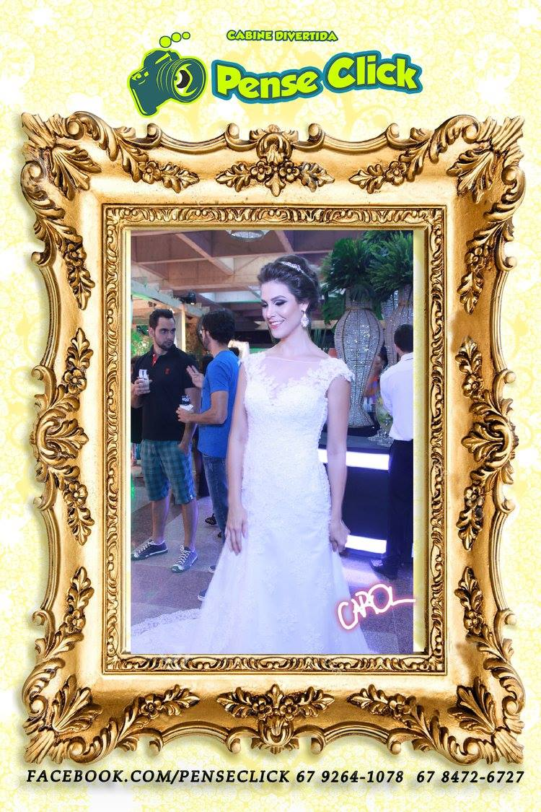
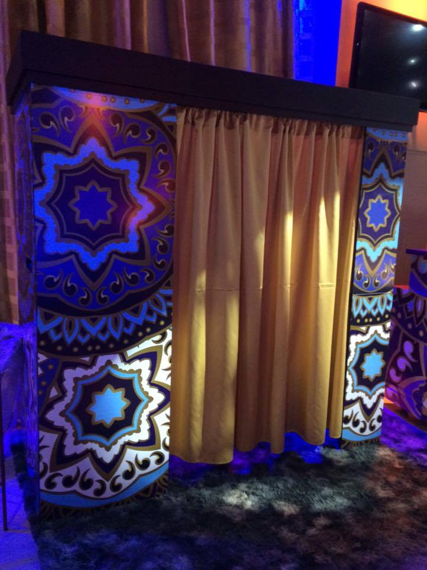

Previous
Adriana
Noiva Carol
Lympstone Harbour Tower
Clouds Over Dawlish
Killerton War Memorial
A Creepy Path
Lympstone Harbour
Scooby the Cat
An English Village
Next
"Shutter Effect" with Canvas and jQuery | Tutorialzine Demo